全流程媒体公关
从传播策略制定、稿件撰写，到媒体投放与效果追踪的一体化服务，覆盖年度媒体服务与项目制传播。
地平线文化科技公司是一家专注于建筑、设计与文化艺术领域的品牌传播机构。
我们相信，好的设计值得被更多人看见。从专题策划到专访撰稿，从奖项申报到展览传播，我们以专业媒体人的视角与全流程的服务，帮助优秀的设计作品穿越圈层，抵达更广阔的公众。
团队核心成员出身建筑行业与专业媒体，既懂设计，也懂传播——我们与建筑师、设计师并肩工作，让每一个作品的故事，都能被准确而有力地讲述。
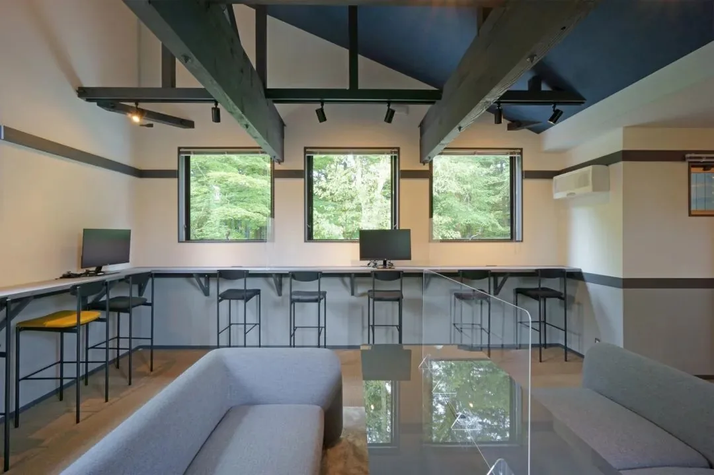
从传播策略制定、稿件撰写，到媒体投放与效果追踪的一体化服务，覆盖年度媒体服务与项目制传播。
深度专访、专题策划、评论撰稿与影像协助，以专业媒体人视角挖掘设计背后的思想与故事。
展览开幕、论坛对谈、发布活动的策划与传播执行，让品牌在现场发生、在圈层中流动。
链接国际媒体平台、行业奖项与专业机构，为品牌匹配合适的传播资源与合作机会。
与 OMA 事务所、IDEAT 理想家杂志合作，从专题策划到专访撰稿，以不同的维度呈现 50 周年的 OMA，集结 10 余篇专题成文；并深入其位于中国香港的办公室，讲述这个享誉国际的事务所背后的故事。
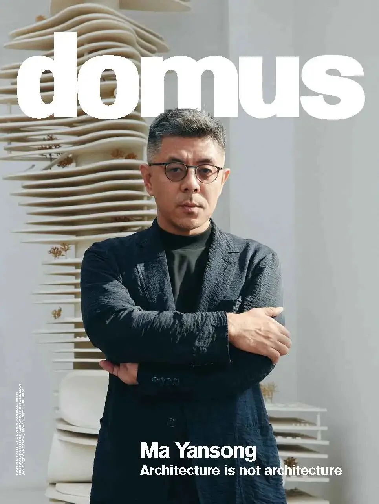
2025 年底，MAD 创始人、建筑师马岩松获选为 2026 年度 Domus 客座主编——该杂志的首位中国籍客座主编，同时也是最年轻的一位。受杂志邀请，我们与 MAD 合作，对马岩松展开独家专访，挖掘更深层次的设计议题。
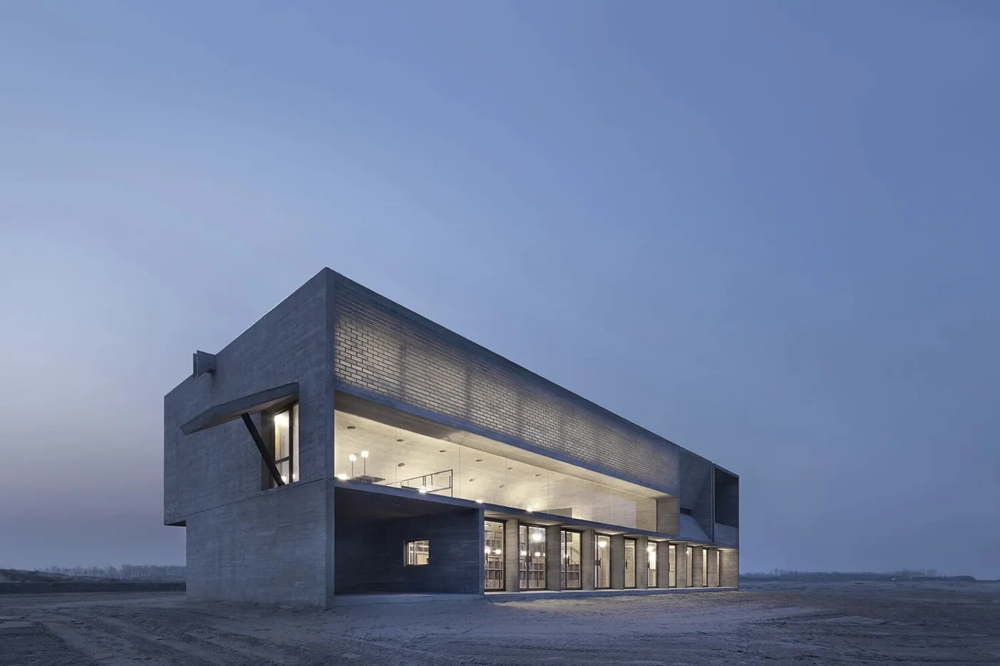
与时尚芭莎杂志合作，为设计大赏年度获奖者——建筑师马清运、董功、青山周平、戚山山，以及意大利家具设计师 Giulio Cappellini，进行系列专题报道。
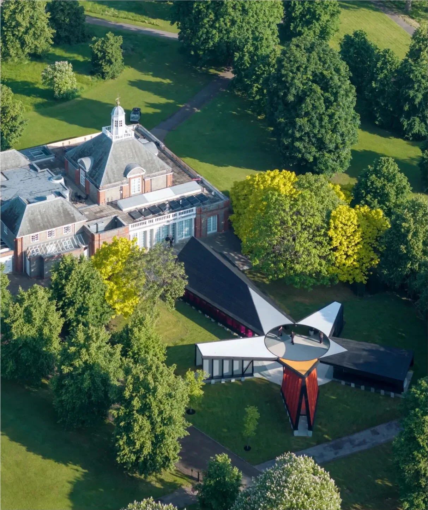
与蛇形画廊、韩国 Mass Studies 建筑事务所以及 IDEAT 理想家合作，独家采访 2024 年英国蛇形画廊设计者、Mass Studies 主持建筑师曹敏硕，并撰稿报道。
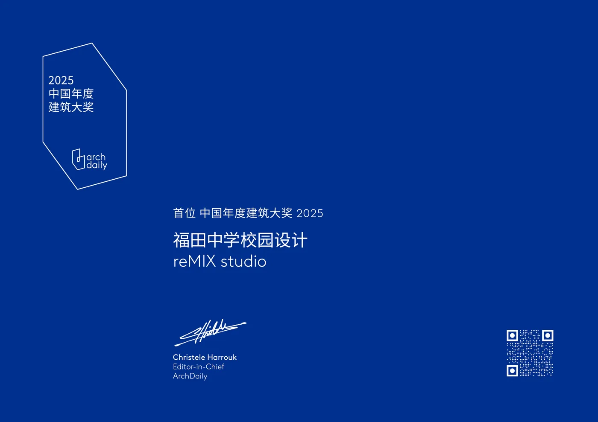
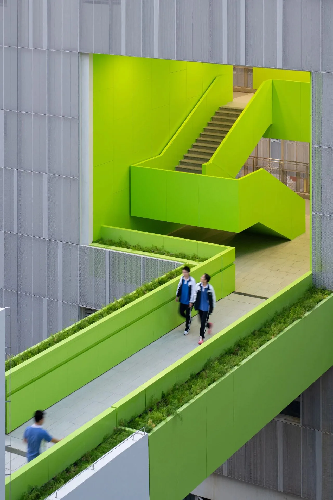
以设计和品牌助力作品传播，全过程持续推进 reMIX studio 临界工作室设计的福田中学项目，使其成为过去 5 年内全中国关注度最高、影响力最大的校园建筑，并助力项目摘得 2025 ArchDaily 中国年度建筑大奖冠军。
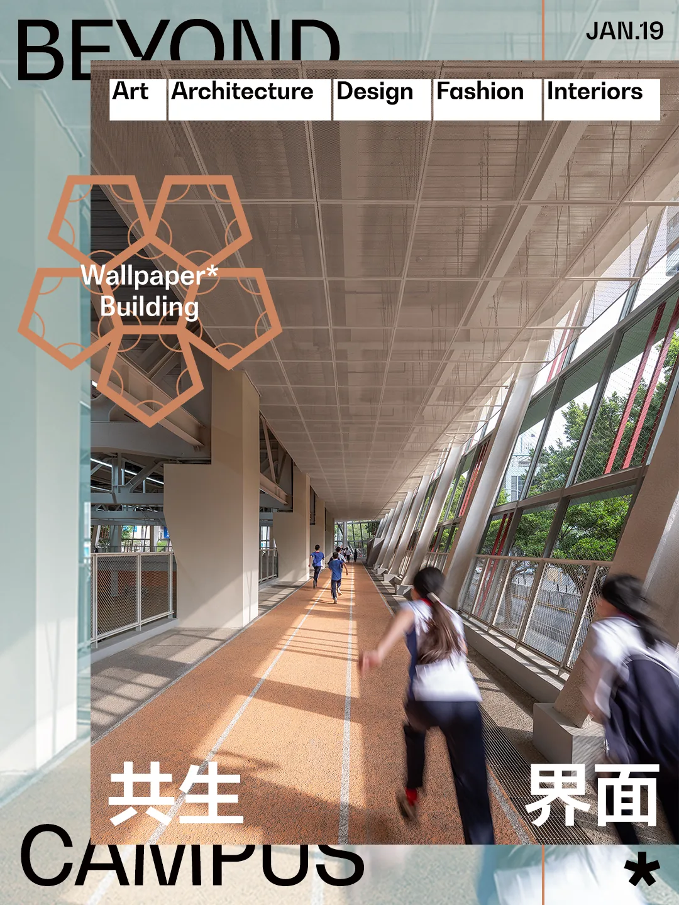
提炼金句、输出观点、协助拍摄、撰写稿件、申报奖项——让这个原本知名度并不高的校园作品，成功从 397 个同类别作品中突围，进入 Wallpaper＊中文版 2025 年度最佳公共建筑大奖终选，并在 Wallpaper 平台上亮相发布。
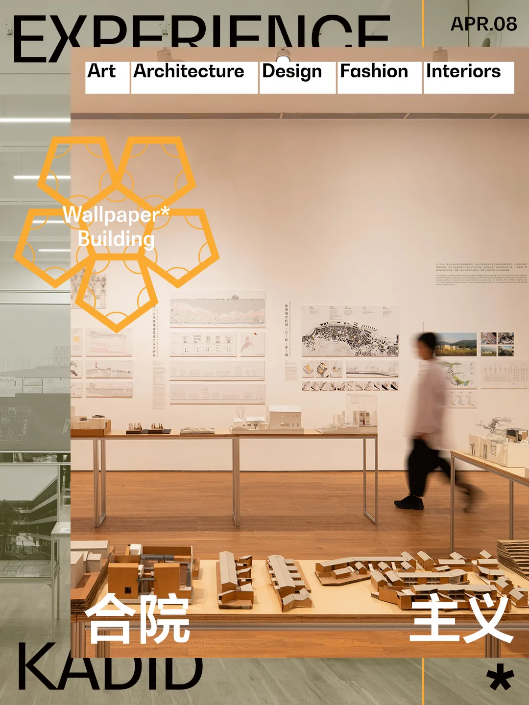
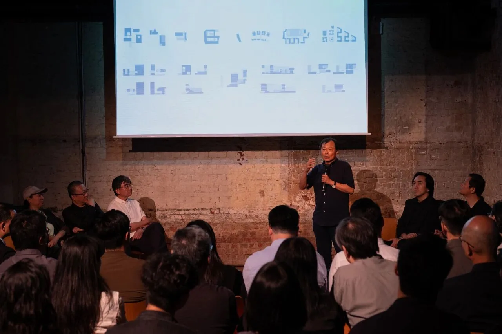
从香港中环艺穗会、深圳重力场美术馆，到上海同济大学建筑学院展厅——三个城市、三个展场，参与港大王维仁工作室系列展览的媒体宣传策划，在 ArchDaily、Wallpaper 等平台获得独家报道，引起广泛的传播与讨论。
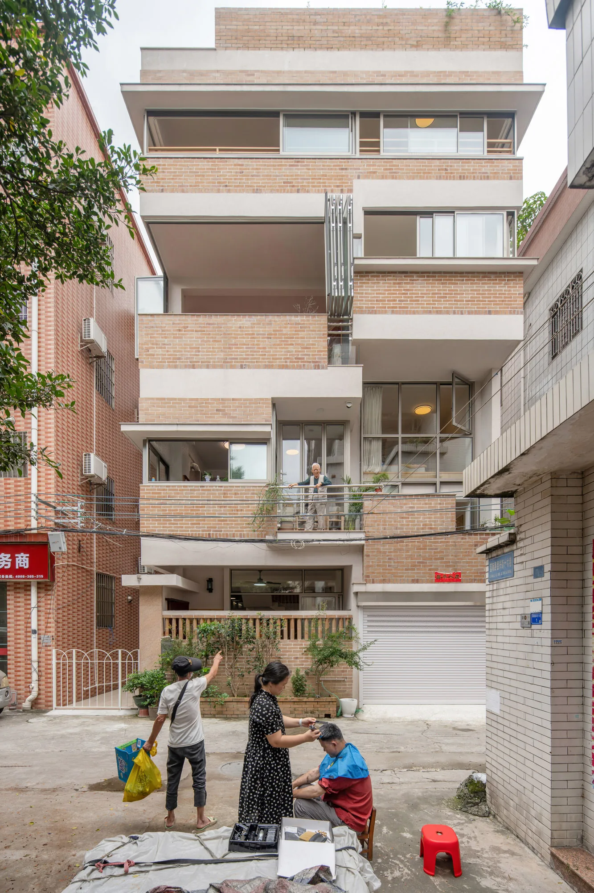
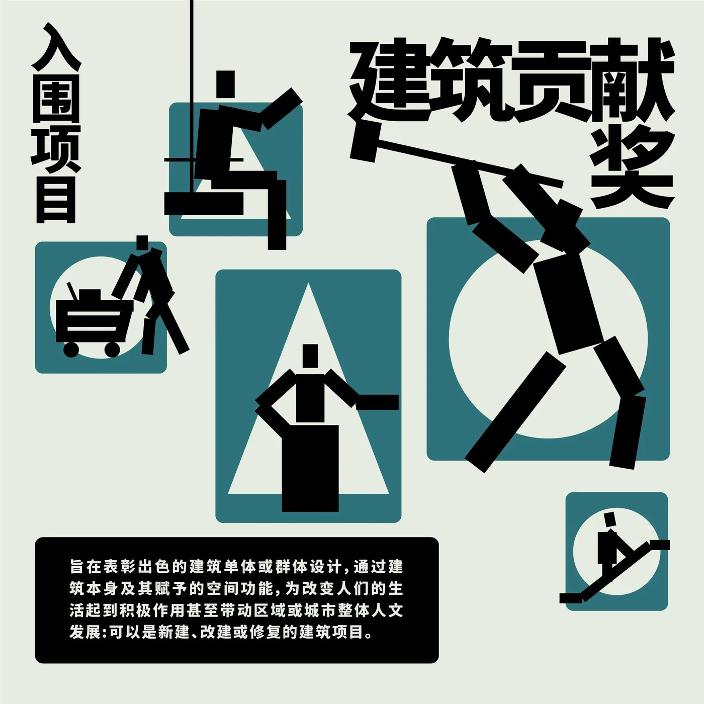
帮助广州多重建筑事务所的私宅设计顺德梁宅被更多人"看见"——在 Wallpaper＊中文版专题报道呈现，并入围三联生活周刊主办的人文城市奖"建筑贡献奖"类别终选。
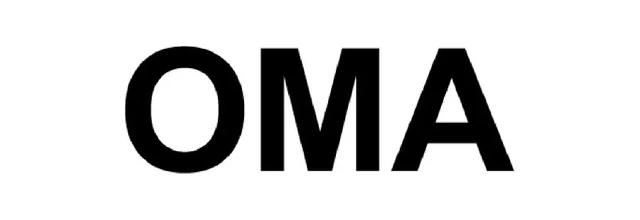
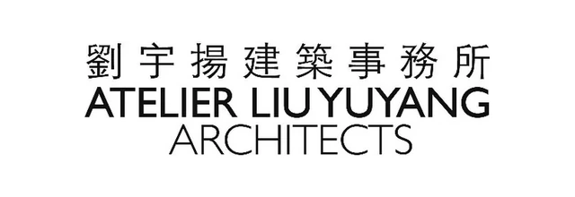
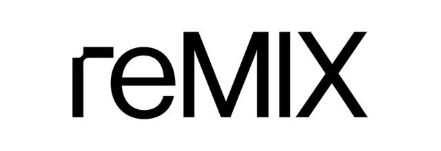
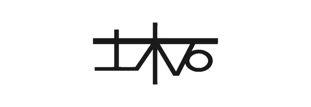
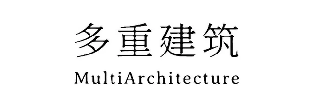
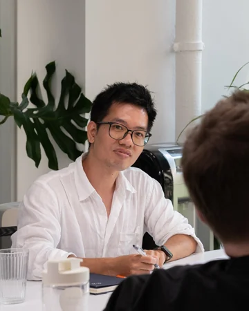
「从建筑到媒体，我们始终站在设计与公众之间——把好作品的故事，讲给更多人听。」